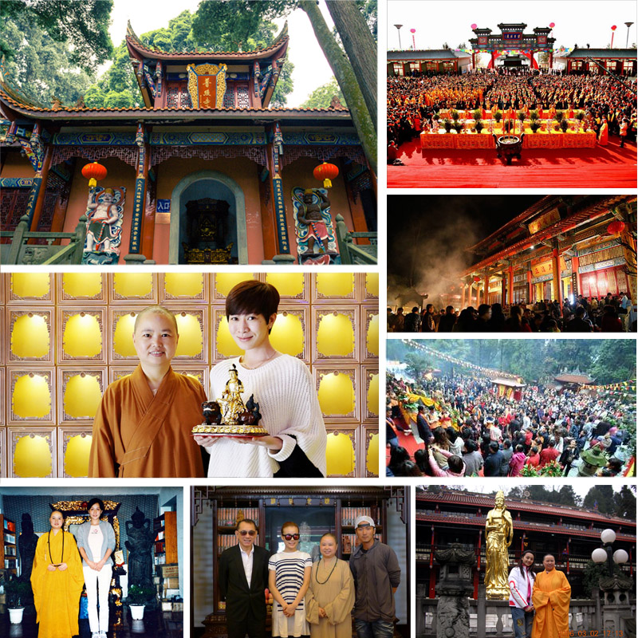
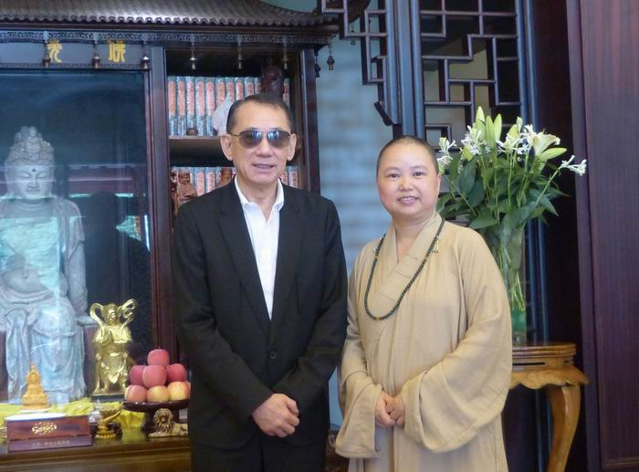
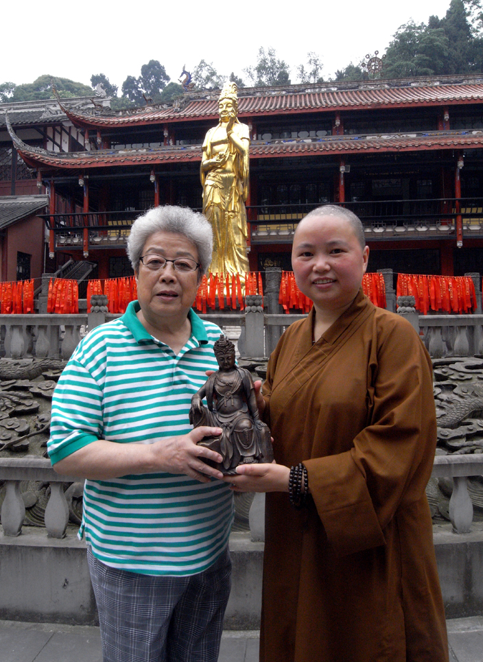
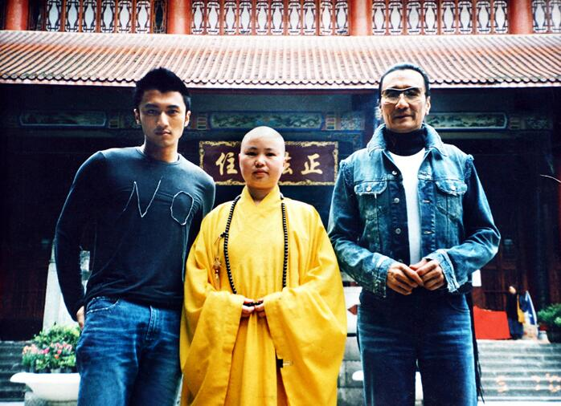
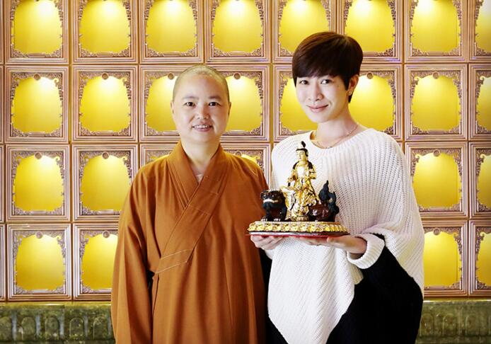
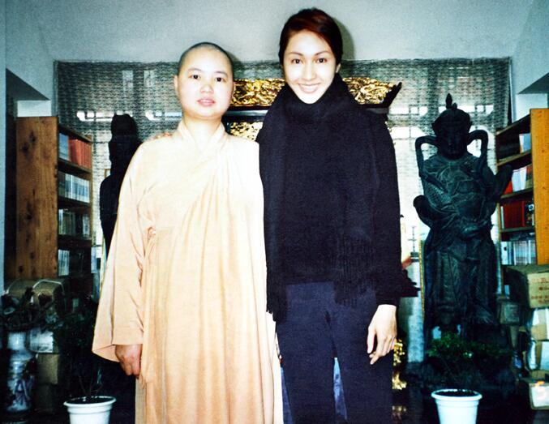
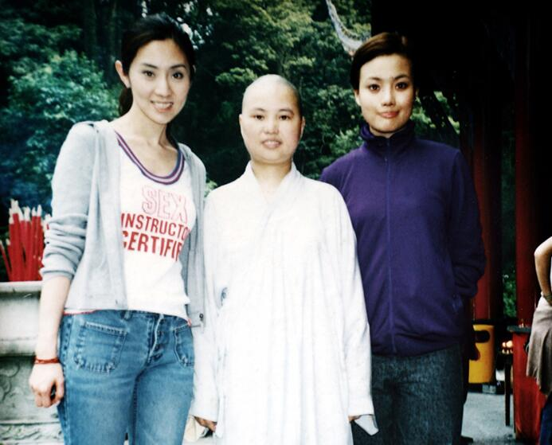
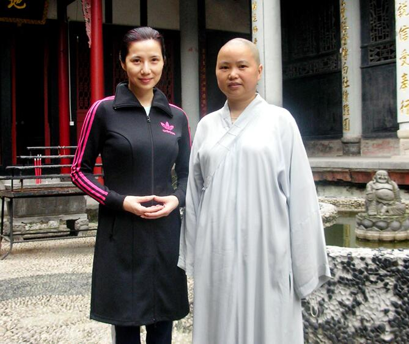

十二生肖本命佛你的生肖守护神，避开太岁本命佛，转运，增运，旺运!
人的运气本有盛衰之别，人们在面对不可知的命数时，往往显得茫然无助。一直以来人们都有“男戴观音女戴佛”的误区，但您可知道据佛经记载，每个人从先天一生下来就有位菩萨或佛在守护您，所生之日与有缘之佛结缘，被称为“本命佛”！ 是与十二生肖者磁场最接近、感应力最强的佛或菩萨。是千百年来人们所供奉的守护神！
属相不同本命佛也不同，只要虚心敬奉本命佛法像，本命佛常伴左右，便能使您逢凶化吉，从而让事业、财运、爱情、学业、健康得到显著改善，从官仕途高升，从商广聚财禄，带您步入人生光明的坦途。本命佛不分男女、不限是否本命年，均可终身佩戴供奉！
你知道吗？十二生肖，是中国传统文化的重要部分，对个人运势有着至关重要的影响。
12生肖受黄道12宫磁场与24节气影响，形成12种不同的特殊基因，从而影响个性和人生，影响十二生肖一生的运气等等。
你是遇到了一个跌宕起伏、浮沉不定的年份，诸事欠顺，恐有不测之灾？
还是办事蜿蜒曲折、起伏不定、动荡不安、是非极多，千辛万苦的成绩却付诸东流？
事业上会不会阻力较大，容易节外生枝，稳定性差，日常交流中容易引起误会、争吵、纠纷？
金钱、感情、人际关系等等都有损耗、残缺和衰败之象？
使广大缘友能结缘自己的终身守护佛——本命佛之灾？
【本 命 佛】+【天然黑曜石】+【正统开光】=3倍正能量
经过正统开光的黑曜石本命佛，长期佩戴能够清除负能量，长期佩戴能够清除负能量，让佩戴者在生活中逢凶化吉，在琐事中心如止水，有助于静气宁神，使睡眠更加安稳。(生肖本命佛如未经开光加持，则未开光明，未开六神通，只能作为普通的饰品、工艺品佩戴、摆放。)
黑曜石：能量非常刚烈、强劲，辟邪效用最佳，随身佩戴黑曜石本命佛是最好的护身符、辟邪物，黑曜石本命佛可以护身防小人，还能招财旺财，排除身体负能量，和增进新的能量;本命佛作为生肖守护神有着驱灾辟邪，招财纳福的作用，当这两种圣物聚集在一起就会有着强大的能量，不仅可以避免负面能量的干扰，还能除去霉运和晦气为您带来财运，最终拥有了超强的气场能量和令人难以置信的神奇力量。适合从事服务行业、零售业、收入起伏不定、彩民、股民、麻将。
本命佛不分男女、不限本命年，均可终身佩戴敬奉！
佩戴本命佛转运？
财运：
佩戴十二生肖本命佛能增强财星的活力，招财旺财，不久会有横财到手。
事业运：
本命佛可以帮你清除事业上面的障碍，工作上让你遇到贵人，帮助你在事业上出现进一步发展的契机。
健康运：
现代人工作疲惫、应酬较多火土之气淤积，脾胃疾病在所难免。生肖守护神能祛除邪气晦气，使人保持一颗平和的心态，不易滋生暗疾。
感情运：
恋爱困难、夫妻矛盾、感情不顺的人佩戴十二生肖本命佛，能改变自身的气场，增强催旺桃花，巩固自身的爱情，异性缘也大大增加。能保护健康。
普照寺始建于清康熙二十年（1681年），本命佛全部经过普照寺大师正统开光的黑曜石本命佛，长期佩戴能够清除负能量，让佩戴者在生活中逢凶化吉、平安如意、事业顺利、家庭幸福。在琐事中心如止水，有助于静气宁神，使睡眠更加安稳。

英皇集团主席杨受成与本命佛的不解之缘
 杨受成早年被控妨碍司法公正，被判入狱9个月。出狱后何的事业也不是很顺利，欠债高达3.2亿元。这个时候结识了普照寺一位果证法师并且听信大师指点奉请了一尊本命佛，并且开始潜心信佛虚心敬佛 ，运气开始好起来。 现他的身价从欠债高达3.2亿，跻身香港超级富豪。英皇娱乐有限公司于1999年1月正式成立，开始打造自己的明星阵容。过程真是其险无比！杨受成惊呼：真是神仙助我！2000年,英皇宣布成立MUSICPLUS音乐家唱片公司，将陈奕迅、陈冠希、郑希怡等归入旗下。从此杨受成一步步确立了"现代香港娱乐圈一把手"。2015福布斯华人富豪榜第267名。可以说他的成功离不开他的精明能干也离不开本命佛带给他的好运气 ！
前国务院副总理吴仪莅临普照寺请本命佛

众多明星在普照寺奉请属于自己的本命佛助自己事业攀上巅峰！
刘嘉玲2002年遭遇来自香港媒的体致命打击，参与普照寺果证法师禅修后，因为认可果证大师的“心灵环保”理念，并且奉请了果证大师赠与她的本命佛佩戴于胸前，时刻心存佛祖。至今日刘嘉玲事业，家庭双丰收，本命佛一直都庇佑着他。
刘德华，1961年9月出生于中国香港，中国知名演员、歌手、影视歌多栖发展的代表艺人之一。据刘德华说，家中父母是信佛的，自小亦有接触佛教，但都是去寺院拜佛、参观、游览而已，对佛教教义可以说是一知半解。真正认识佛教和皈依佛教，作为自己的宗教信仰，是前些年经朋友介绍认识了普照寺果证大师，可以说是一种缘分，奉请了普照寺一位果证法师赠与的本命佛，，庇佑自己及家人 。至今日华仔事业、家庭双丰收，本命佛一直都庇佑着他。

谢霆锋

佘诗曼

黎姿
曹颖

容祖儿

关秀媚
本命佛多次显效果，帮助缘主完成心愿!
特别提醒：
本命佛不分男女、不限本命年，均可终身佩戴敬奉！
缘主切记：生肖不同对应的本命佛不同，生辰不同对应的开光时间不同！一定要经过正规开光加持的本命佛才有灵性，反之则可能遭来厄运！
本命佛，功效和灵性都很强，开光之后的本命佛为大家挡难消灾，可以挽回婚姻，挽回感情，增加情侣夫妻感情，锁住对方的心，助财运旺姻缘还能防小人。得到了很多缘主的好评！
下面挑选两位缘主为大家揭秘：
张女士求子成功、留住婚姻！
据张女士介绍，2014年跟他结的婚。可是结婚1年了，还是没有孩子，我们都很着急，父母也经常催促我们，前年因为他工作很努力被提拔成了部门经理，然后应酬就开始多起来，经常很晚回家。一天偶然发现了他的手机信息，原来他有外遇了，瞬间感觉天塌了下来。哭了好几天，朋友也跟我说了好多，吵闹也没有什么用，身体也越来越差。后来朋友介绍我说本命佛很灵的， 叫我去 普照寺奉请一尊戴戴试试，我想也没什么不可，就找到普照寺果证大师并且按照果证大师的指点虚心奉养本命佛。过了三个月吧大概，神迹发生了，我发现我竟然怀孕了，心里特别开心，全家人也都跟着高兴，老公也跟小三闹翻了，并且还主动向我承认错误，发誓以后会好好爱护这个家。本命佛真是太灵了！真的很感谢果证大师，希望本命佛可以保佑我和家人事事顺利，平平安安！
创业青年朱世超与本命佛的缘分
我是一个海龟，开始在一家日企上班，但是年轻人么不满足于现状，就决定下海创业，可是创业并不是那么一帆风顺， 刚开始的时候公司效益还不错 ，可是到了后来不知道怎么了公司业绩直转而下，想了很多办法改善模式都没有什么效果，偶然的机会结识了果证大师，经大师指点我奉请了一尊虚空藏菩萨本命佛择吉日戴在胸前， 没过多久， 公司就开始接新单了，我喜出望外看来人的运气非常重要啊！我马上叫我朋友也奉请了一尊，朋友戴了之后也觉得整个人都变的很明朗了， 现在过去3个月了，公司业绩很不错，尤其是最近接了一个20w的项目心里特别开心，努力创业的同时更要感谢果证大师，自己努力很重要，一个人的运气也很重要，多亏了本命佛的庇佑，谢谢本命佛！谢谢果证大师！

开光本命佛都适合那些人群奉养佩戴？
做生意的人！
想让家人运势转好，好运加强，赶走邪气，镇宅辟邪的人。奉请已开光的本命佛，可令家运转好，好运加强，赶走邪恶.
想让家人运势转好，好运加强，赶走邪气，镇宅辟邪的人。奉请已开光的本命佛，可令家运转好，好运加强，赶走邪气，有辟邪之功效，成为你的很好的守护神，保合家平安。
偏行，收入浮动者，例如销售、经商、外汇、股票、金融、彩马、期货、赌场等。开光本命佛有趋财旺财的作用，尤对偏行、收入浮动者有奇效。
经常乘坐交通工具的人。当遇到煞气，会使家人居住不安，损人破财家庭不合，车祸，血光，开刀，离婚等。而且是本命佛你心灵相通的守护神，转祸为祥之神。最擅化解五黄煞，天斩煞，穿心煞，镰刀煞，屋角煞，刀煞，白虎煞，阴气煞。
对于家庭不合，破财，夫妻感情不合离婚等，本命佛也是必需的选择
如果遇到自己不喜欢的异性追求，也可以用本命佛化解桃花煞。
出去旅游的人。开光本命佛除煞辟邪能力都很强，出门在外带着保平安非常好。有辟邪之功效，成为你的很好的守护神，保合家平安。
偏行，收入浮动者，例如销售、经商、外汇、股票、金融、彩马、期货、赌场等。开光本命佛有趋财旺财的作用，尤对偏行、收入浮动者有奇效。
经常乘坐交通工具的人。当遇到煞气，会使家人居住不安，损人破财家庭不合，车祸，血光，开刀，离婚等。而且是本命佛你心灵相通的守护神，转祸为祥之神。最擅化解五黄煞，天斩煞，穿心煞，镰刀煞，屋角煞，刀煞，白虎煞，阴气煞。
所以对于家庭不合，破财，夫妻感情不合离婚等，本命佛也是必需的选择。
佩戴供奉本命佛常见问题
问：佩戴开光本命佛有什么需要注意的地方？
答：佩戴开光佛像重在有颗敬佛之心，诸恶莫作，众善奉行。对于生活中诸如吃饭、睡觉、上卫生间等一些小节则无需多作介意，佛法广博无边，为善普度众生，众生日常生活皆能以宽博之心容纳，万物皆有自性，佛菩萨均无执著心，视众生平等本善，佛法不离世间法。
问：需择良辰吉时尊请或佩戴供奉本命佛吗？
答：佛教讲"随缘"。万物因缘生，万物因缘灭。您有了请佛的念头，并得偿所愿，这就是与佛"结缘"。另外佛教有句话："日日是好日"，好与不好在于心态，因此无需刻意择吉日尊请或佩戴供奉。当然，如果要看黄历选日也未尝不可，也算是一种敬佛之心吧。
问：日常有不方便佩戴的时候怎么办
答：很多时候有些人有佩戴本命佛等开光圣品的想法，但又因各种特殊因素导致不方便佩戴的，可以将圣品放在原有佩盒或用干净的布袋装着放在包中随身携带。如果想暂时放置时，最好放回原有佩盒中或用干净的布包着，放置在干净无灰尘的地方。
问：圣品上的佩绳可以更换吗
答：佩绳对开光圣品之灵气不会带来影响，所以可随意更换。
问：若圣品有损坏或丢失的情况怎么办
答：如果开光圣品不小心损坏或丢失了，那可能是灵性的开光圣品为您抵挡了一劫灾难，未必是件坏事，所以无需作过多的担忧和难过。无心过失，佛和菩萨是不会怪罪的，只要重新请一件即可。已损坏之之圣品不可乱丢或弃置垃圾桶，可用干净的布包好埋入地下或树下即可。有的缘友想将损坏的佛像送到寺院，其实这是没有必要的。
问：开光圣品可作二次开光加持吗
答：可以的。若有缘遇到高僧大德，也可请他为您继续开光加持。
问：有人说，佛像只可供奉不能佩戴是真的吗
答：佛陀说过：依法不依人，依义不依语。"法"就是佛经，"义"可以简要理解为意思。"语"怎么 说没关系，是为了方便，重要的是领悟个中意思。佛经中并无不能佩戴供奉佛像的说法，而从不提倡佩戴佛像之文字中来看，其义重在"亵渎之心"。信众们佩戴供奉佛像都是本着恭敬心，并无亵渎之心的。佩戴供奉佛菩萨像，其本义是与佛菩萨、佛法亲近，有何不可？如果按此说法类推，露天大佛日日遭风吹日晒雨淋霜打，岂非更为"有罪"？因此，我们明白其"义"所在，无需执著于其"语"的内容。延伸来说，诸佛早已证得无上正等正觉的佛果，大菩萨都是大慈大悲、自觉觉他，岂会执著于我们这个世界的实相？就例如我们平常为佛菩萨上供，也是一种恭敬心的表现，佛菩萨岂会真贪恋人间的供果吗。
果证大师本命佛以“善为根，信为本”为宗旨，以“弘扬佛法，传播善念，祈福众生”为己任，为使广大缘友能结缘自己的终身守护佛--本命佛，是中国第一家把佛文化、易文化与民俗传统文化玉器、珠宝、法物等凝聚为一体，展示出深远的用意与独特的文化内涵，让佛法普度众生、劝恶向善、扶危济困的品德感染芸芸众生；以石之“仁、义、智、勇、洁”带给世人吉祥如意，平安幸福！
每尊本命佛全都经由果证大师开光开运！佛法加持！保佑护身！
【重要提醒】点击马上奉请本命佛 1、每尊结缘价188法金，数量有限！要请从速！！ 2、每一尊本命佛通过果证大师开光加持（只有自己才能佩戴） 3、全国货到付款，免邮费！ 4、赶快请属于自已的本命佛吧 佛法庄严！请您本着善意，在提交订单前确定请购意向！ 结缘方式：
佛到拒收即是“请佛回家，又赶佛出门”，此种恶因是万万不能种的！